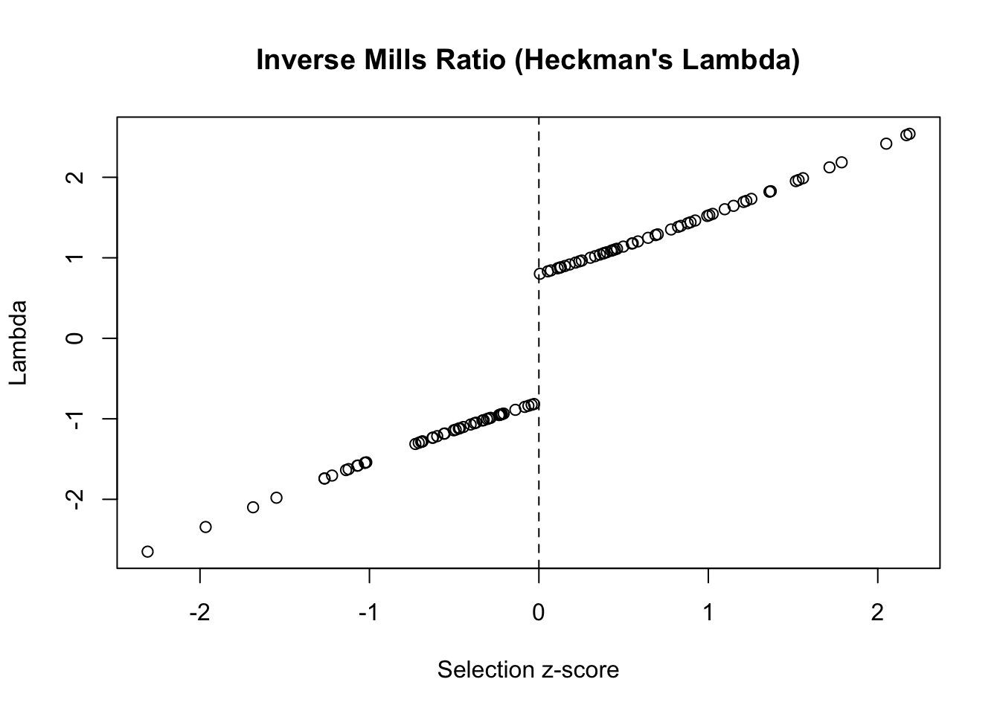
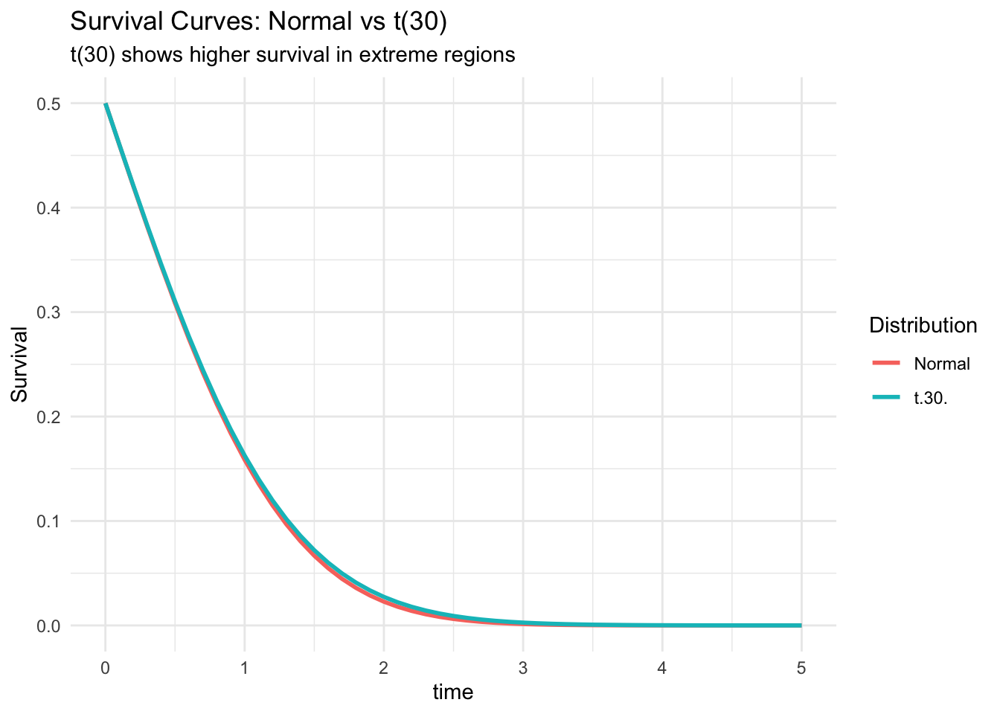
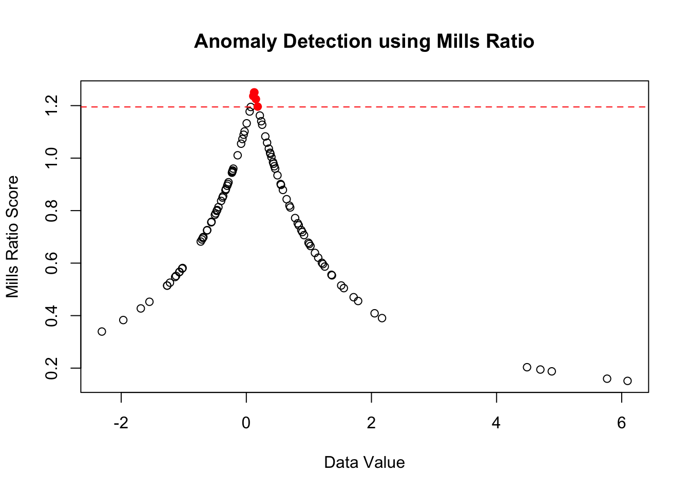

Show code
devtools::load_all(".", quiet = TRUE)
library(tidyverse)
library(plotly)Real-world uses in finance, engineering, and statistics
devtools::load_all(".", quiet = TRUE)
library(tidyverse)
library(plotly)Mills ratios appear in diverse fields from financial risk management to reliability engineering. This article explores practical applications with working examples.
In risk management, the Mills ratio helps calculate expected losses beyond VaR:
# Portfolio with normal returns
mu <- 0.001 # Daily return
sigma <- 0.02 # Daily volatility
confidence <- 0.99 # 99% VaR
# VaR threshold (standardized)
z_var <- qnorm(1 - confidence)
# Expected shortfall using Mills ratio
mills <- mills_ratio_normal(-z_var)
expected_shortfall <- mu - sigma / mills
cat("99% VaR:", round(mu + sigma * z_var, 4), "\n")99% VaR: -0.0455 cat("Expected Shortfall:", round(expected_shortfall, 4), "\n")Expected Shortfall: -0.0523 cat("ES/VaR ratio:", round(expected_shortfall / (mu + sigma * z_var), 2))ES/VaR ratio: 1.15Mills ratios appear in exotic option formulas:
# Digital option delta using Mills ratio
digital_delta <- function(S, K, r, sigma, T) {
d2 <- (log(S/K) + (r - 0.5*sigma^2)*T) / (sigma*sqrt(T))
# Delta involves Mills ratio
mills <- mills_ratio_normal(-d2)
delta <- exp(-r*T) / (sigma * sqrt(T) * mills)
return(delta)
}
# Example
S <- 100 # Current price
K <- 105 # Strike
r <- 0.05 # Risk-free rate
sigma <- 0.2 # Volatility
T <- 0.25 # Time to maturity
digital_delta(S, K, r, sigma, T)[1] 10.64601For components with lifetime distribution, the mean residual life at age \(t\) is:
# Mean residual life function
mean_residual_life <- function(t, distribution = "normal", ...) {
if (distribution == "normal") {
# For normal with mean mu, sd sigma
mills <- mills_ratio_normal(t, ...)
return(mills)
} else if (distribution == "exponential") {
# Constant for exponential (memoryless)
return(mills_ratio_exp(t, ...))
}
}
# Compare distributions
t_vals <- seq(0, 3, by = 0.5)
mrl_normal <- sapply(t_vals, mean_residual_life, distribution = "normal")
mrl_exp <- sapply(t_vals, mean_residual_life, distribution = "exponential")
data.frame(
age = t_vals,
normal = round(mrl_normal, 3),
exponential = round(mrl_exp, 3)
) age normal exponential
1 0.0 1.253 1
2 0.5 0.876 1
3 1.0 0.656 1
4 1.5 0.516 1
5 2.0 0.421 1
6 2.5 0.354 1
7 3.0 0.305 1For series systems with component lifetimes:
# Series system with n components
series_system_mills <- function(x, n_components, dist = "normal") {
# Individual component Mills ratio
m_component <- mills_ratio_normal(x)
# System Mills ratio (approximation for large x)
m_system <- m_component / n_components
# System hazard rate
h_system <- 1 / m_system
return(list(
mills_ratio = m_system,
hazard_rate = h_system,
mean_life = m_system
))
}
# 5-component system
series_system_mills(x = 2, n_components = 5)$mills_ratio
[1] 0.08427385
$hazard_rate
[1] 11.86608
$mean_life
[1] 0.08427385In Tobit models and truncated regression:
# Heckman correction using Mills ratio
heckman_correction <- function(z_scores) {
# Selection equation produces z-scores
selected <- z_scores > 0
# Inverse Mills ratio for correction
lambda <- numeric(length(z_scores))
lambda[selected] <- 1 / mills_ratio_normal(z_scores[selected])
lambda[!selected] <- -1 / mills_ratio_normal(-z_scores[!selected])
return(lambda)
}
# Example with simulated data
set.seed(123)
z <- rnorm(100)
lambda <- heckman_correction(z)
plot(z, lambda,
main = "Inverse Mills Ratio (Heckman's Lambda)",
xlab = "Selection z-score",
ylab = "Lambda")
abline(v = 0, lty = 2)
Mills ratio in survival probability calculations:
# Survival function using Mills ratio
survival_probability <- function(t, dist = "normal", ...) {
if (dist == "normal") {
mills <- mills_ratio_normal(t, ...)
# S(t) = mills * f(t)
return(mills * dnorm(t, ...))
}
}
# Compare survival curves
t_grid <- seq(0, 5, by = 0.1)
surv_normal <- sapply(t_grid, survival_probability, dist = "normal")
surv_t30 <- pt(t_grid, df = 30, lower.tail = FALSE)
plot_data <- data.frame(
time = t_grid,
Normal = surv_normal,
`t(30)` = surv_t30
) %>%
pivot_longer(-time, names_to = "Distribution", values_to = "Survival")
ggplot(plot_data, aes(time, Survival, color = Distribution)) +
geom_line(size = 1) +
labs(
title = "Survival Curves: Normal vs t(30)",
subtitle = "t(30) shows higher survival in extreme regions"
) +
theme_minimal()Warning: Using `size` aesthetic for lines was deprecated in ggplot2 3.4.0.
ℹ Please use `linewidth` instead.
Mills ratio in capability indices:
# Enhanced process capability using Mills ratio
process_capability_mills <- function(USL, LSL, mu, sigma) {
# Standard capability indices
Cp <- (USL - LSL) / (6 * sigma)
Cpk <- min((USL - mu) / (3*sigma), (mu - LSL) / (3*sigma))
# Expected loss using Mills ratio
z_usl <- (USL - mu) / sigma
z_lsl <- (LSL - mu) / sigma
mills_upper <- mills_ratio_normal(z_usl)
mills_lower <- mills_ratio_normal(-z_lsl)
# Expected defects per million
dpm_upper <- 1e6 * exp(-z_usl^2/2) / (sqrt(2*pi) * mills_upper)
dpm_lower <- 1e6 * exp(-z_lsl^2/2) / (sqrt(2*pi) * mills_lower)
return(list(
Cp = round(Cp, 3),
Cpk = round(Cpk, 3),
DPM_upper = round(dpm_upper, 1),
DPM_lower = round(dpm_lower, 1),
Total_DPM = round(dpm_upper + dpm_lower, 1)
))
}
# Six Sigma process
process_capability_mills(USL = 6, LSL = -6, mu = 0, sigma = 1)$Cp
[1] 2
$Cpk
[1] 2
$DPM_upper
[1] 0
$DPM_lower
[1] 0
$Total_DPM
[1] 0.1Using Mills ratio for anomaly scores:
# Anomaly score based on Mills ratio
anomaly_score <- function(x, robust = TRUE) {
if (robust) {
# Use median and MAD
center <- median(x)
scale <- mad(x)
} else {
center <- mean(x)
scale <- sd(x)
}
# Standardize
z <- abs(x - center) / scale
# Mills ratio as anomaly score
# Higher Mills ratio = more extreme
scores <- mills_ratio_normal(z)
return(scores)
}
# Example with contaminated data
set.seed(123)
clean_data <- rnorm(95)
outliers <- rnorm(5, mean = 5, sd = 0.5)
data <- c(clean_data, outliers)
scores <- anomaly_score(data)
# Identify outliers (high Mills ratio)
threshold <- quantile(scores, 0.95)
is_outlier <- scores > threshold
plot(data, scores,
col = ifelse(is_outlier, "red", "black"),
pch = ifelse(is_outlier, 19, 1),
main = "Anomaly Detection using Mills Ratio",
xlab = "Data Value",
ylab = "Mills Ratio Score")
abline(h = threshold, lty = 2, col = "red")
# Reinsurance premium calculation
excess_loss_premium <- function(retention, limit, mu, sigma) {
# Standardize retention and limit
z_ret <- (retention - mu) / sigma
z_lim <- (retention + limit - mu) / sigma
# Use Mills ratio for tail expectations
mills_ret <- mills_ratio_normal(z_ret)
mills_lim <- mills_ratio_normal(z_lim)
# Pure premium
premium <- sigma * (1/mills_ret - 1/mills_lim)
return(list(
pure_premium = premium,
loss_probability = pnorm(z_ret, lower.tail = FALSE),
conditional_expectation = sigma / mills_ret
))
}
# Example: $1M excess $500k
excess_loss_premium(
retention = 500000,
limit = 1000000,
mu = 100000,
sigma = 200000
)$pure_premium
[1] -952866
$loss_probability
[1] 0.02275013
$conditional_expectation
[1] 474643.1Mills ratios provide elegant solutions across diverse applications:
The unifying theme is the characterization of tail behavior, making Mills ratios essential for any analysis involving extreme values or rare events.